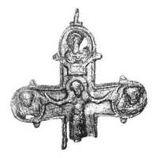
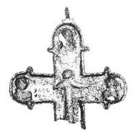

Catalog › CE-0670 · KOR2003-II.1.1.49
Valvă de față de cruce-encolpion cu Răstignire, Maica Domnului, Ioan Teologul și Mântuitorul în medalioane
sec. XI–XII (1001–1200) · Kiev (Catedrala Sf. Sofia), Ucraina · Rezervația Națională „Sofia Kievskaia” (NZSK), Kiev, inv. СМАА 3346
single valve of a reliquary cross, aramă; c. XI–XII (1001–1200); found at Kiev (Catedrala Sf. Sofia), Ucraina; kept at Rezervația Națională „Sofia Kievskaia” (NZSK), Kiev.




Identificare
- Categorie
- Valvă izolată
- Material
- Aramă
- Tehnică
- Turnare în relief; Gravare (incizie)
- Stare
- Restaurată
- Dimensiuni
- Î 51 × L 70 × Gr 5 mm
Iconografie
- Avers
- Sf. Ioan; Hristos Pantocrator
- Descriere avers
- Valvă de față de cruce-encolpion cu capete rotunjite (parte din capătul de jos pierdută). Interiorul cu adâncituri ce repetă reliefurile feței. În centru Răstignirea în relief completată cu gravură. În medalioane, încadrate pe margine cu crestătură, busturi în relief: la stânga Maica Domnului, la dreapta Ioan Teologul în poză de durere; sus imaginea în relief a Mântuitorului în medalion, sub care traversa dreptunghiulară în relief a tăbliței, topită cu medalionul, cu inscripție pe jumătate ștearsă și ornamentată pe margine cu crestături. Alte inscripții nu sunt. Crucea ușor îndoită; în medalionul de sus, în cel stâng și în centru, pierderi de metal prin coroziune.
- Inscripții
- ϹΧϹ (în tăbliță, pe jumătate ștearsă)
- Limba
- Greacă
Datare și atribuire
- Datare
- sec. XI–XII (1001–1200)
- Centru
- Necunoscut
- Tipologie
- Korzukhina–Peskova 2003, tip II 1 1
Descoperire
- Localitate
- Kiev (Catedrala Sf. Sofia)
- Țară
- Ucraina
- Context
- Biserică / mănăstire
Păstrare și referințe
- Colecție
- Rezervația Națională „Sofia Kievskaia” (NZSK), Kiev
- Nr. inventar
- СМАА 3346
- Bibliografie
- G. F. Korzukhina, A. A. Peskova, Древнерусские энколпионы. Нагрудные кресты-реликварии XI–XIII вв., Sankt-Petersburg, 2003 [Korzukhina–Peskova 2003], p. 67, cat. nr. II 1 1/49, reprodusă la Табл. 19 (planșe, p. 261).
- Figura
- Табл. 19
- Planșe
- Korzukhina–Peskova 2003, Табл. 19 (planșă fără paginație proprie în PDF; p. 261 tipărită)
- Observații
- Datare după Peskova: sec. XI–XII. Circumstanțe: Săpături F. N. Molceanovski, 1936, Catedrala Sf. Sofia (corul „O”). Dimensiuni: 5,1 cm lungime păstrată. Coordonate: nu sunt date în sursă.
Citare: Corpus Encolpiorum, CE-0670, Valvă de față de cruce-encolpion cu Răstignire, Maica Domnului, Ioan Teologul și Mântuitorul în medalioane, --root/piese/KOR2003-II.1.1.49/ (accesat 2026-10-17).